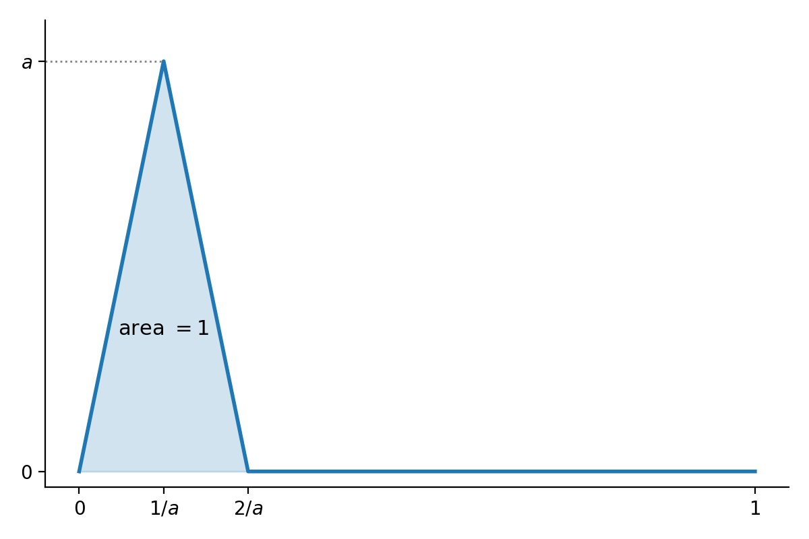

The Singular Value Decomposition
The Singular Value Decomposition (SVD) is a version of the spectral theorem that applies to non-square matrices. Let X be a real n\times m matrix and let D=X^{\top}X. D is apositive symmetric m\times m matrix and so we can apply the spectral theorem to find an orthogonal matrix P such that P^{\top}DP=\Lambda where \Lambda is diagonal. Put another way: DP = P\Lambda
which expresses the fact that the columns of P are orthonormal eigenvectors for D.
Let’s set A=XP. Then A^{\top}A=P^{\top}X^{\top}XP=\Lambda. This means that the columns of A are orthogonal but not necessarily orthonormal.
From a geometric point of view, the entries of each row of A are the coordinates of the corresponding row of X in the orthonormal basis given by the columns of P.
If D is positive definite, so all the \lambda_{i}>0, then we can normalize the columns of A by setting A_{1}=A\Lambda^{-1/2}. This happens if and only if X has rank m\le n. In this case A_{1}^{\top}A_{1}=\Lambda^{-1/2}\Lambda\Lambda^{-1/2}=I. So A_{1} has orthonormal columns.
If D has zero eigenvalues, then the matrix A will have zero columns corresponding to the zero eigenvalues. So let’s order the eigenvalues in descending order of size and suppose \lambda_{r+1},\ldots, \lambda_{m} are all zero. In this case, the rank of X is r. Drop columns r+1,\ldots, m from A, yielding A_{r}, and “shrink” \Lambda so that it is r\times r with the nonzero eigenvalues on the diagonal, yielding \Lambda_{r}. Let A_{1}=A_{r}\Lambda_{r}^{-1/2} as before. This A_{1} is n\times r and has orthonormal columns.
Complete the columns of A_{1} to obtain an orthogonal n\times n matrix U by adding orthonormal columns u_{r+1},\ldots, u_{n}. Let \sigma_{i}=\sqrt{\lambda_{i}} for i=1,\ldots,m and let \Sigma be the n\times m “diagonal” matrix constructed from these “singular values.”
The key point now is that, in the product U\Sigma, the first r columns are multiplied by the nonzero \sqrt{\lambda_{i}}, so the first r columns of U\Sigma give the matrix A_{1}\Lambda_{r}^{1/2}, which agrees with the first r columns of A=XP. The remaining columns of U\Sigma are zero, which agrees with the remaining columns of A=XP.
Therefore: XP = U\Sigma
or X=U\Sigma V^{\top} where U is orthogonal, \Sigma is n\times m “diagonal”, and V=P is m\times m orthogonal. This is called the singular value decomposition of X. The diagonal entries of \Sigma are called the singular values and are uniquely determined.
The “reduced” form of this decomposition keeps only the first r columns of U, leaving an n\times r matrix U_{r}; the first r diagonal entries of \Sigma, leaving an r\times r diagonal matrix \Sigma_{r}; and the first r columns of P, yielding an m\times r matrix V_{r}. Then X = U_{r}\Sigma_{r}V_{r}^{\top}.
Low Rank Approximations
Our goal is to apply the SVD to study the problem of approximating a linear map L:A\to B by a map of lower rank. As we will see later, such approximations have important applications in data science and other applied fields. To make this notion precise, we will need to clarify how we measure the distance between linear maps. Before diving into that question, though, let’s indicate how the SVD plays a role.
One way to interpret the singular value decomposition is that allows one to write a linear transformation L:A\to B where A is m-dimensional and B is n-dimensional as a sum of rank one maps. This follows from the fact that, if we choose bases and let X be the matrix of L, then the reduced SVD tells us that X = \sum_{i=1}^{r} \sigma_{i}u_{i}v_{i}^{\top}.
Here the u_{i} and v{i} are the columns of U and V respectively and the \sigma_{i} are the singular values. Each u_{i}v_{i}^{\top} is an (n\times 1) \times (1\times m) matrix product, yielding an n\times m matrix. It is rank one since its range is spanned by u_{i}.
The terms are linearly independent since we know X has rank r.
Now consider the matrices obtained by truncating this sum: X_{k} = \sum_{i=1}^{k} \sigma_{i}u_{i}v_{i}^{\top}
Here X_{k} has rank k. Our goal is to show that, in a precise sense, X_{k} is the “best” rank k approximation to the original matrix X (and the corresponding linear map is the best rank k approximation to the original linear map).
Norms on Vectors, Matrices and Linear Maps
Our discussion in this section follows Conrad’s expository note Computing the Norm of a Matrix
Vector Space Norms
Let V be a (real or complex) vector space. A norm on V is a function \|\cdot\|\to \mathbf{R} such that:
- \|v\|\ge 0 for all v\in V, with equality if and only if v=0.
- \|v+w\|\le \|v\|+\|w\| for all v,w\in V.
- \|cv\|=|c|\|v\| for c\in\mathbf{R} and v\in V.
If the first condition is relaxed to just \|v\|\ge 0 for all v\in V, then \|\cdot\| is called a seminorm.
The second condition (the triangle inequality) means that the function d(v,w)=\|v-w\| is a metric on V in the sense of topology.
There are two key examples of such norms.
The “sup” norm relative to a basis. Choose a basis e_{1},\ldots, e_{n} for V. Then define \|\sum_{i=1}^{n} a_{i}e_{i}\| = \sup\{|a_1|,\ldots, |a_{n}|\}.
The “Euclidean” norm or \ell^{2} norm defined by an inner product \langle \cdot,\cdot\rangle:
\|v\| = \sqrt{\langle v,v\rangle}.
The fact that satisfies the triangle inequality is a consequence of the Cauchy-Schwartz inequality
|\langle v,w\rangle|\le \sqrt{\langle v,v\rangle \langle w,w\rangle}.
(see the Cauchy–Schwarz inequality).
In particular \begin{aligned} \|v-w\|^2&=\langle v-w, v-w\rangle \\ &= \langle v,v\rangle -2\langle v,w\rangle +\langle w,w\rangle \\ &\le \|v\|^2+2|\langle v,w\rangle| +\|w\|^2 \\ &\le (\|v\|+\|w\|)^2 \end{aligned}
If the inner product is the “standard one” then the \ell^{2} norm gives the standard Euclidean distance in the standard coordinates.
Definition: Two norms \|\cdot\|_1 and \|\cdot\|_{2} on a vector space are equivalent if they are each bounded by a constant multiple of the other. In other words, the two norms are equivalent if there are constants A and B such that A\|v\|_{1}\le \|v\|_{2}\le B\|v\|_{1} for all v\in V.
Remark: The metric topologies on V coming from equivalent norms are the same, so, for example, if a series converges with respect to one norm, it converges with respect to every equivalent norm. In a finite dimensional space, the “unit ball” \|v\|_{\mathrm{sup}}\le 1 is compact since it is topologically the product of closed intervals; hence the unit ball is compact under any norm equivalent to the sup norm.
Proposition: The sup norm and the \ell^{2} norm for the standard inner product are equivalent.
This is because if v=\sum_{i=1}^{n} a_{i}e_{i}, then \sup_{i} \{|a_{i}|\} \le \sqrt{\sum_{i} |a_{i}|^2}\le \sqrt{n}\sup_{i} \{|a_{i}|\}.
Minkowski’s Theorem
In fact, a theorem of Minkowski states that all norms on a finite dimensional vector space over \mathbf{R} or \mathbf{C} are equivalent. This result is a consequence of the fact that \mathbf{R} and \mathbf{C} are locally compact fields, and the proof involves the application of the Heine-Borel theorem that any bounded sequence in these fields has a convergent subsequence. The proof (of a more general result on valued fields) is given in Conrad’s Equivalence of Norms.
Furthermore, a finite dimensional vector space is complete with respect to the metric topology coming from one (or any) norm.
It is worth noting that Minkowski’s theorem is very definitely false for infinite dimensional vector spaces. For example, consider the space C([0,1]) of continuous functions on the interval [0,1]. Define two norms on this space. The first is the “sup norm”: \|f\| = \sup_{0\le x\le 1} |f(x)| and the second is the L^{1} norm: \|f\| = \int_{0}^{1} |f(x)|dx.
Notice that we can find a continuous function whose sup-norm is arbitrarily large, while its L^{1} norm remains one, by looking at a function with a big “spike” but total area 1 as shown here.

Norms on Matrices
Now we consider norms on matrices and linear maps. Notice that if V and W are n and m dimensional vector spaces respectively over a field F, then the choice of a basis for V and W allows us to identify the space of linear maps from V to W with M_{n\times m}(F). This in turn is an n\times m dimensional vector space over F.
When F is \mathbf{R} or \mathbf{C}, one choice for a norm on a matrix A=(a_{ij}) is the sup norm: \|A\|_{\mathrm{sup}} = \sup_{1\le i\le n, 1\le j\le m} \{|a_{ij}|\}
A second choice is the \ell^{2} norm, also called the Frobenius norm: \|A\|_{F} = \sqrt{\sum_{i,j} |a_{ij}|^2}.
Observe for later that \|A\|_{F}^2 = \mathrm{tr}(AA^{\top}) = \mathrm{tr}(A^{\top}A).
Both of these norms are defined on matrices, not linear maps; they depend on the choice of bases for V and W.
Proposition: Let A by an n\times m matrix over \mathbf{R} or \mathbf{C}.
Then there is a constant C such that the linear map v\mapsto Av from F^{m} to F^{n} satisfies
\|Av\|\le C\|v\|
where \|v\| is the Euclidean norm.
Proof: Following Conrad, we see that if v=(c_1,\ldots, c_{m}), then \begin{aligned} \|Av\| &\le \sqrt{m}\|Av\|_{\mathrm{sup}} \\ &\le \sqrt{m}\sup_{1\le i\le n} |\sum_{i=1}^{m} a_{ij}c_{j}|\\ &\le \sqrt{m}\sup_{1\le i\le n}\sum_{j=1}^{n} |a_{ij}|\|v\|_{\mathrm{sup}} \\ &\le n\sqrt{m}\sup |a_{ij}|\|v\|_{\mathrm{sup}} \\ &\le (n\sqrt{m}\sup_{i,j}|a_{ij}|)\|v\| \end{aligned} so we can use C = n\sqrt{n}\sup_{ij}|a_{ij}|
The Operator Norm
The operator norm gives a basis-independent way to define a norm on linear maps from V to W, given norms on V and W. Let L:V\to W be such a linear map. Define \|L\|_{\mathrm{op}} = \inf_{v\in V} \frac{\|L(v)\|}{\|v\|}.
The Frobenius norm
We are interested in norms on matrices and linear maps that enable us to measure “distance” between maps and therefore characterize the idea of “best approximation.” We will consider two different matrix norms, the operator norm and the frobenius norm. The operator norm is invariant under change of basis and is therefore a norm on linear maps, while the frobenius norm is only invariant under unitary change of basis.
The operator norm
Let L be a linear map L:V\to W where V is n-dimensional and W is m-dimensional. Define \|L\| = \sup_{v\in } \|Av\|